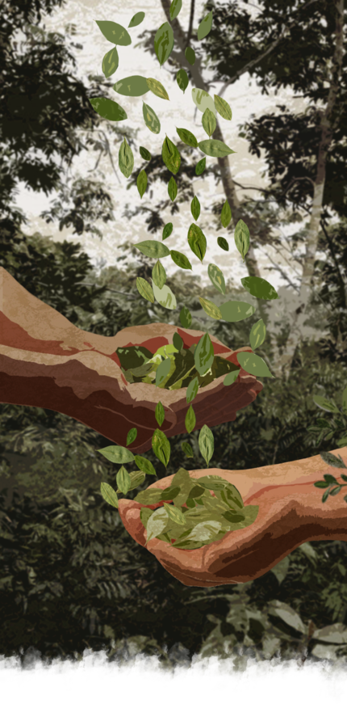
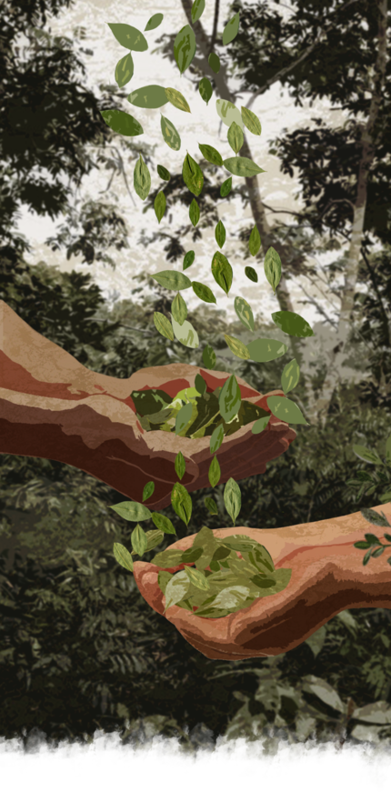

NARCOBENEFACTORES
NARCO
BENEFACTORES
El tributo del narco en los márgenes de la Amazonía peruana

Ante la ausencia del Estado en Mariscal Ramón Castilla, la provincia peruana ubicada en la triple frontera amazónica, los narcotraficantes hacen de las suyas mediante una singular dinámica: los “narcobenefactorados”. Esta investigación de La República y CONNECTAS comprueba, con documentos y evidencia gráfica, cómo los jefes del narco han logrado que las comunidades indígenas y campesinas los dejen operar, mediante el pago de tributos para obras como losas deportivas, refacciones de colegios y acciones sociales.
Hay pruebas de que, en la frontera peruana con Brasil y Colombia, la provincia Mariscal Ramón Castilla (MRC) está perdiendo la lucha contra el narcotráfico. Según el último reporte de la Comisión Nacional para el Desarrollo y Vida sin Drogas (Devida - 2020), allá se concentra el 67% de los cultivos de coca de todo Loreto, la cuarta región a nivel nacional con mayor producción de este ancestral arbusto. El origen de esta situación es la “ausencia del Estado”, repiten ciudadanos y autoridades locales que fueron entrevistados en esta investigación. Esta ausencia que refieren ha sido suplida por organizaciones de tráfico de drogas, con una creciente participación en los asuntos públicos de las comunidades: los “narcobenefactores”.

Los narcotraficantes que transforman la hoja de coca en cocaína han encontrado un mecanismo para legitimar su actividad ilícita en los territorios donde operan, lo llaman el “derecho a la comunidad”. Se trata de una retribución económica por el terreno utilizado para cultivar coca destinada al narcotráfico. Se puede dar de muchas formas, en algunos casos se paga un monto por cada arroba de hoja de coca extraída y en otros una mensualidad previamente establecida con los representantes comunales. Sin ser grandes sumas de dinero, estos ingresos resultan ser determinantes en una provincia como MRC.
Con estas partidas se logran hacer pequeñas obras como locales comunales, losas deportivas o refacciones en colegios, las mismas que tienen gran impacto para las comunidades. Durante esta investigación se identificaron siete obras construidas bajo esa dinámica. Son dos locales comunales, un comedor, un estrado, una loza deportiva y dos colegios con refacciones. Además, se pueden cubrir los gastos de las familias que “caen en desgracia”, ya sea porque alguno de sus miembros enferma o fallece.

Las imágenes corresponden al registro fotográfico de obras ejecutadas a través de narcobenefactorados, pero han sido distorsionadas para resguardar a las comunidades de cualquier tipo de represalias.

Las imágenes corresponden al registro fotográfico de obras ejecutadas a través de narcobenefactorados, pero han sido distorsionadas para resguardar a las comunidades de cualquier tipo de represalias.
Esta investigación se trabajó con once comunidades, tanto indígenas como campesinas, de los cuatro distritos de toda la provincia MRC (Ramón Castilla, Yavarí, San Pablo y Pebas). La mayoría de entrevistados son o eran representantes comunales además de raspachines, lo que se complementó con actores sociales representativos como maestros y líderes religiosos. Esto para comprobar el patrón testimonial establecido durante una visita previa y descartar la posibilidad de que se trate de un “hecho aislado”, como suelen repetir las autoridades cada que son consultadas. Por otra parte, los nombres y lugares utilizados han sido reservados para evitar exponerlos a represalias individuales por un problema que es más bien estructural.
Para Emilio, el pago de este derecho es una opción al abandono que las comunidades sufren desde hace décadas. “Uno mira la necesidad que tiene el pueblo. Por ejemplo, nosotros veíamos que los fines de semana, cuando caía la lluvia, se hacía un barral para jugar pelota. Todo quedaba feo y la juventud iba creciendo. Si no hay deporte, ellos se van mucho al fiu, fiu fiu, a la tomadera”, afirmaba. “¿Entonces qué hicimos? Una losa deportiva porque nos gusta mucho jugar al fútbol”, agregó este hombre que alguna vez fue parte del Ejército, el mismo que abandonó porque los 120 soles (32 dólares) mensuales que recibía de la institución no le alcanzaban para apoyar económicamente a su familia.
Emilio llegó a la comunidad en la que vive desde hace 14 años como raspachín, un trabajador temporal que se dedica exclusivamente a cosechar hoja de coca en condiciones de explotación para los verdaderos jefes del narco. Poco a poco fue subiendo de posición. Luego de ganarse la confianza del patrón (jefe narcotraficante), pasó a procesar cocaína en los laboratorios y transportarla. Pero, como “era mucho riesgo”, después de un tiempo dejó aquellas tareas para hacer sus propias chacras de coca y trabajar más tranquilo. Ahora está a un paso de ser patrón. Sin embargo, dice, él prefiere lanzarse a la alcaldía. Actualmente alterna puestos en la representación comunal y sigue gestionando recursos de los “narcobenefactores”.
Emilio conoce muy bien el negocio del narcotráfico, pero dice que “ya hizo capital” y ahora quiere probar suerte en la política para “ayudar a su pueblo”.
Experiencias similares se encuentran en todo MRC, donde el abandono es la constante más palpable. De acuerdo con el portal REDinforma del Ministerio de Desarrollo e Inclusión Social (MIDIS), menos del 8% de su población tiene acceso a agua potable, más del 50% no tiene energía eléctrica, apenas tres colegios de los 425 que hay cuentan con servicios básicos completos y su sistema de salud se encuentra en condiciones precarias. Una situación que se complica cuando los servidores públicos responden las demandas de sus ciudadanos con un “no hay presupuesto” o “pongan una parte y nosotros (municipio) completamos”.
Algo que no pasa con los “narcobenefactores”, pues para ellos, estas son oportunidades para seguir construyendo relaciones de dependencia económica que disfrazan de “derecho a la comunidad”. Este pago incluso parece emular valores del estado liberal moderno, pues son recursos obtenidos de los narcotraficantes que deben ser, por decirlo de algún modo, transparentados entre los beneficiados. Esta tarea se realiza en las asambleas comunales, ya que permiten rendir cuentas de manera colectiva. Algunas veces, estas rendiciones se registran en los libros de actas; otras, en simples cuadernos de notas sin ninguna formalidad. Cada que ingresa un aporte, este se apunta acompañado únicamente con el apelativo del patrón.
Así se evidencia en los registros que La República pudo obtener tras varios meses de investigación en MRC. Tras identificar la existencia de estos documentos, solicitamos a diferentes representantes comunales que nos dieran acceso a los mismos; sin embargo, el temor ante la posibilidad de ser criminalizados evitaba que los mostraran. Al fin, tras el compromiso de resguardar ubicaciones e identidades, una junta directiva aceptó. Estos cuentan con validación notarial, evidencian ingresos y egresos de esta especie de tributo que el patrón otorga por el uso de tierras. Los gastos realizados coinciden con la obra que se viene realizando en la comunidad, pero además, se rastrearon los presupuestos de la municipalidad distrital y provincial a través del Portal Transparencia y se corroboró que no provienen del dinero público.
Estos documentos están editados para proteger la ubicación de la comunidad y evitar cualquier tipo de represalias.
En MRC, el escenario del narcotráfico resulta cada año más complejo, pues ha pasado de tener 370 hectáreas de superficie cultivada con arbustos de hoja de coca en producción durante el 2015, a 4.247 hectáreas en el 2020. Es un incremento de más de 1000% en solo 5 años. Una buena parte de este total de hectáreas se encuentra en territorios indígenas. De acuerdo con Devida, de las 40 comunidades que tienen mapeadas, las más afectadas son Bellavista de Callaru, Cushillococha y Nueva Galilea.
Superficie cultivada con arbusto de hoja en coca en producción
Ronald recuerda que a inicios de los 2000 llegó a su comunidad un foráneo que decía ser de Tocache y pidió hablar con los representantes comunales. Quería que sembraran coca y les ofrecía, a cambio, tener buenas casas donde vivir. “En ese tiempo mi papá, mi tatarabuelo, no tenían su casa así como esta. Era puro caraná, ¿de pronto tú conoces esa hoja?, pura hoja tejida con huacrapona. Solo con eso”, describió el ahora hombre de 30 años, dueño de una casa construida con material noble, calaminas, puertas y ventanas de aluminio. A los 15 años empezó en la siembra de cocales con su familia y a los 18 años se convirtió en un raspachin. Al inicio podía raspar apenas 12 kilos al día, casi nada comparado a los 110 kilos que logra hacer ahora.
Un raspachín puede ganar entre 1.000 y 1.500 soles mensuales, 270 y 400 dólares en promedio respectivamente. El pago por cada kilo de hoja coca cosechada fluctúa entre los 0.70 céntimos y 1 sol peruano, un aproximado de 0.27 centavos de dólar. Pero como en todo mercado, existen riesgos en las inversiones y quienes terminan pagando los platos rotos son los raspachines. “Trabajamos fiado, por eso, si agarran al traquetero ya olvídate, en vano vas a trabajar. ¿A dónde vas a reclamar? Ahí sí pierde no solamente uno, si no todititos los trabajadores”, lamentó Ronald.
Ronald ha pasado casi la mitad de su vida como raspachín, pero dice no querer involucrarse más en el negocio del narcotráfico para evitar el riesgo de caer preso.
Sin que nadie los evidencie, los “narcobenefactores” tienen más de dos décadas ganando terreno en MRC. El Estado, en cambio, solo se hace presente un par de días cada cuatro meses a través de las Plataformas Itinerantes de Acción Social (PIAS) o con los programas de actividades productivas impulsados por Devida. Este último busca a través de los cultivos alternativos como el cacao, reducir los de la coca. Una tarea que, según los propios reportes de la institución, no está dando resultados positivos en esta provincia fronteriza. Esto porque, por un lado, es muy complicado competir con los periodos de cultivo y cosecha de coca. Pero además, porque se han adaptado sembríos de coca y cacao en un mismo espacio, algo que llaman “cultivos asociados”.
Según ha afirmado en varias ocasiones el presidente ejecutivo de Devida, Ricardo Soberón Garrido, la lucha contra el narcotráfico se ha frenado a causa de la pandemia. “El narcotráfico penetra nuestra Amazonía. Una de las consecuencias de dos años de COVID”, escribió hace algunos días en sus redes sociales. No cabe duda que este ha sido un factor determinante; sin embargo, no explica el crecimiento sostenido de los indicadores de esta actividad ilícita desde el 2015. La República buscó entrevistarlo; sin embargo, al cierre de esta edición se sigue esperando una respuesta.
Agricultor cosecha yucas en medio de su chacra con arbustos en crecimiento de hoja de coca, lo que se le conoce como “cultivo asociado”.
Para Oscar Llapasca Samaniego, gerente de la Gerencia Regional de Desarrollo Forestal y Fauna Silvestre (GERFOR) del Gobierno Regional de Loreto (GOREL), “Devida no está haciendo bien su chamba”. Refiere que una de las consecuencias más evidentes de esto es que MRC es la provincia de Loreto con más hectáreas de bosque perdidas. Al 2021, son 9.181 hectáreas de bosque las que han sido deforestadas con tala rasa, un tipo de tala que consiste en quitar todos los árboles de un área determinada para utilizar dicho espacio en actividades agrícolas o ganaderas.
Las imágenes satelitales del GOREL muestran la ubicación de los puntos de deforestación muy alejados de zonas habitadas, lo que no es compatible con una agricultura familiar de subsistencia. “La única manera de que estas áreas de agricultura resulten rentables es con cultivos ilícitos”, asegura Llapapasca, quien en el último año ha tenido que reubicar al menos a 10 empresas forestales porque las áreas que les eran concesionadas para extraer madera tenían cultivos de coca y presencia de cocaleros.
“Le hemos entregado áreas a una concesionaria y cuando ha entrado al bosque han encontrado cultivos. Los narcos, dueños de los cultivos, los han hostigado, amenazado, y por eso nos piden compensación. Nos han dicho ‘no podemos entrar aquí, debemos irnos a otra parte porque hay sembríos de coca’. La zona de frontera con Colombia, el Yavarí, Putumayo, Napo y Bajo Amazonas son las zonas donde hay más cultivos de coca”, afirma señalando un mapa.
Advierte que desde el GOREL existen serios cuestionamientos a las cifras de Devida, ya que, según sus estimados, existirían alrededor de siete mil hectáreas de cultivo de coca en MRC, más de dos mil hectáreas adicionales a las reportadas por la institución antidrogas. “Devida quiere justificar su sueldo, pero no están haciendo un buen trabajo. Nosotros tenemos serios cuestionamientos a las cifras que reportan y si tenemos que enfrentarlo técnicamente lo vamos a hacer. Esta situación es muy complicada y se tiene que visibilizar. El Estado no tiene control”, aseveró Llapapasca.
Pérdida de bosque por provincia en Loreto al 2021
Esto es algo en lo que coinciden los efectivos de las bases de la Dirección Antidrogas (Dirandro) de la Policía Nacional del Perú (PNP) ubicadas en la provincia. Específicamente de las bases de Chimbote, Caballococha y Santa Rosa, que pese a estar ubicadas en la zona con mayor presencia del narcotráfico de todo Loreto, cuentan apenas con nueve, diez y nueve policías respectivamente. La mayoría de estos son jóvenes recién egresados que no tienen ninguna experiencia en bases u operativos antidrogas. Además, no hay un solo oficial a cargo, pues las tres bases se encuentran en manos de técnicos.
“No estamos en condiciones de hacer operativos. No hay personal suficiente, con los efectivos que tenemos no nos abastecemos. Igual que la población está abandonada, nosotros también lo estamos”, explica un efectivo PNP destacado en una de las bases de la Dirandro mencionadas. Cuenta que les toca hacer turnos seguidos porque son solo cuatro policías por cambio y que, cuando salen en operativos, queda uno solo cuidando la base entera. Esto sucede en una provincia que se encuentra en estado de emergencia, lo que supone una situación excepcional de seguridad.
Por ahora, según este policía, lo único que pueden hacer en las condiciones que se encuentran es sobrevivir. “Se está descuidando bastante al personal en esta lucha antidrogas, pienso también que la estrategia que hay es… (hace una pausa silenciosa mientras gesticula su decepción) les dicen que siembren su cacao, ya, lo siembran, pero después ¿dónde lo venden? No hay mercado. ¿Qué hacen ellos? Aprovechan, te sembrarán el cacao para sustentar, pero siguen con la coca”, explicó indignado el policía, refiriéndose directamente a la labor que desarrolla Devida.
Una joven madre de familia y su padre, ambos raspachines ocasionales, trasladándose desde una de las comunidades en donde trabajan.
Para el narco un territorio como MRC, que se ubica en una zona de frontera, se vuelve un lugar de operaciones estratégico. De acuerdo con diversas investigaciones académicas, la provincia está conectada a las rutas del narcotráfico que desembocan en el Océano Atlántico. La producción de cocaína, controlada mayormente por colombianos, termina en manos de organizaciones criminales como Familia do Norte, Primeiro Comando da Capital o Comando Vermelho. Asimismo, desde la caída del precio de la hoja de coca a causa de la pandemia, el Cártel de Sinaloa se ha ido acercando a algunos productores de la zona.
Emanuel Fabiano, antropólogo y docente de la Pontificia Universidad Católica del Perú (PUCP), considera que el tema del narcotráfico en las comunidades indígenas y campesinas de la Amazonía debe analizarse sin caer en la criminalización de quienes cultivan y cosechan la coca. Hacerlo implicaría seguir rompiendo la cadena por el eslabón más débil, sin tomar en cuenta que existe una deuda social con estas personas que buscan la manera de subsistir.
“Lo que yo me pregunto es, ¿cómo frente a un discurso de lucha contra el narcotráfico hay estas zonas que parecen tan olvidadas? Como si allá el tema de la economía que prospera por el narcotráfico no existiera. Podríamos pensar, quizá, que esta economía les permite sobrevivir y funcionar a todos los niveles con una mínima intervención estatal”, sugiere.
De igual modo concuerda con la percepción de que las estrategias que desarrolla Devida, tal y como se viene haciendo, no son sostenibles como una alternativa al cultivo de coca. “Los programas que se introducen a estos territorios, como la producción del cacao, no garantizan que el agricultor vaya a obtener una ganancia como sí lo hace la coca. Entonces, en todas estas comunidades, una opción segura es seguir con lo que sí te da una ganancia. El precio puede variar, pero te da ganancia”, sostiene.
-
 Yo soy el segundo, después vienen los fincarios, luego los
raspachos, los despachadores, los cocineros, los
transportistas… Los que pagan pato son los de abajo ya,
a los grandes ni se le ve.
Hacemos cuando no pagan 1 o 2 campañas su derecho a la
comunidad, si no pagan, no pueden ingresar sus materiales.
Yo soy el segundo, después vienen los fincarios, luego los
raspachos, los despachadores, los cocineros, los
transportistas… Los que pagan pato son los de abajo ya,
a los grandes ni se le ve.
Hacemos cuando no pagan 1 o 2 campañas su derecho a la
comunidad, si no pagan, no pueden ingresar sus materiales.
Emilio, acopiador y procesador de cocaína
El alcalde de MRC, Rodolfo Díaz Soto, manifiesta estar preocupado porque su provincia es considerada el segundo Vraem. Estas siglas hacen referencia al valle de los ríos Apurímac, Ene y Mantaro, uno de los puntos de mayor riesgo en todo el Perú debido a la presencia de remanentes de Sendero Luminoso, organización terrorista que desangró al país en las décadas de los 80 y 90. “Nos dicen así porque el narcotráfico ha cubierto toda la provincia de MRC, ese es otro de los problemas con el que nosotros no podemos lidiar mientras no intervenga el gobierno nacional. Ha ocupado la mayoría de las comunidades indígenas. A ellos los tienen amenazados, los manipulan y ponen en contra de nosotros”, manifestó el burgomaestre.
A todos los entrevistados y entrevistadas para este reportaje se les hizo la misma pregunta ¿Qué se puede hacer para terminar con el narcotráfico? Las respuestas, cada una con distintos matices, tuvieron un punto común: que el Estado se haga presente.
Ellos preferirían que el Estado atendiera las necesidades más básicas de la provincia y no el “narcobenefactor”. Piden tener opciones de trabajo, para no tener que heredar las manos callosas de los raspachines. Quieren que los niños y jóvenes puedan estudiar sin tener que pedirle al patrón dinero para las calaminas del colegio. Ruegan una posta cercana que tenga suero antiofídico para no ver morir a sus familiares por una mordedura de serpiente. Mientras tanto, el narcotráfico seguirá condicionando las trayectorias de vida de los ciudadanos y ciudadanas de MRC, camuflado como si fuera un buen “benefactor”.